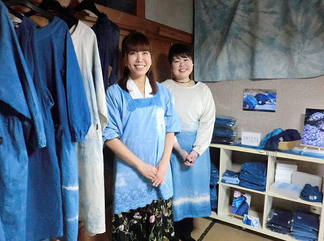
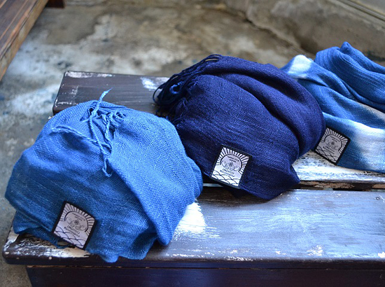

被災地のいま 宮城県・福島県の現状
3.11を忘れない・・
みやぎ生協から被災地・宮城のいまをお伝えします
第67回 2019年3月5日 ―復興を担う女性たち―
「希少なパステル染めを、気仙沼の人の手で育てていきたい」
株式会社インディゴ気仙沼
インディゴ気仙沼は、天然インド藍を使った染色サービスとオリジナル商品を制作販売する会社です。始まりは、2015年に代表の藤村さやかさんが子育てサークルの友人2人と「子連れで働ける職場を」と立ち上げた染色工房でした。「インディゴ（※）は気仙沼の海の青をイメージさせる。染色の作業なら乳飲み子をおんぶし、空いた手でできる。そう話し合ってスタートしたんです」。
しかし染色は全員未経験。先達に教えを請いながら、自分たちが作りたい染めを探す毎日。最初は徳島産の藍に人工的な触媒を加える“化学建て”を試みましたが、１年後にインド藍の“天然建て”に切り替えます。その間もストールやTシャツを染めて販売し、徐々に従業員に給料を出せるようになりました。
さらに「子どもに着せて安心な商品を作ろう。そのためには自分たちの目で確認した原材料を使いたい」と、日本で藍染めに主に使われるタデ藍の栽培にも取り組みます。しかし夏の短い気仙沼では思うように育たず、藤村さんたちは寒い地方でも育つインディゴ植物を探します。そうして、気仙沼の気候に適した作物として着目したのが、現在、フランスのトゥールーズ付近の狭い範囲のみで生産されているパステルでした。
藤村さんたちはさっそく種を取り寄せて植え、発芽、葉の収穫と一つずつ作業を進めながら、パステルが気仙沼の気候に合っていることを確かめました。「染めるなら気仙沼で育てた植物で染めたい」と考えての挑戦でした。
一方でパステル染めによる商品の販売先も確保しました。「いま、収益の大部分はインド藍の事業によるものですが、これをパステルの事業で成り立つようにしたいし、海外にも販路を開きたい」と意欲を見せます。
3人で始めた工房は現在、パステル栽培を担う農家を含め9人に増えました。「自分の事業だと思ったことはない。気仙沼のパステル染めを、ワインのように気仙沼の風土を体現した商品に育て、いずれは地場産業としてまちの皆さまにお渡ししていければ」。
震災発生から8年。「新しい建物が増え、まちに色彩が戻ってきた」と藤村さんは喜びます。インディゴ気仙沼が染める青や水色も気仙沼のまちを彩る色の一つ。その魅力が国内外に広まることを願って、インディゴ気仙沼の挑戦は続きます。
※インディゴ／鮮やかな藍色を作り出す染料
●株式会社インディゴ気仙沼 https://www.indigo-ksn.com/

▲インディゴ気仙沼の工房の工房で、藤村さやかさん（左）とスタッフの遠藤千幸（ちゆき）さん。天然インディゴで染められたワークエプロンやストールなどの商品が展示されています。

▲天然インディゴ染めのストール。気仙沼の海をイメージさせる様々な青が魅力です。
（写真提供：（株）インディゴ気仙沼）
前の記事
第66回「―復興を担う女性たち―「亘理町の文化から生まれた手作り雑貨。ビジネスとして長く続けていきたい」株式会社 WATALIS」（2019年2月5日）